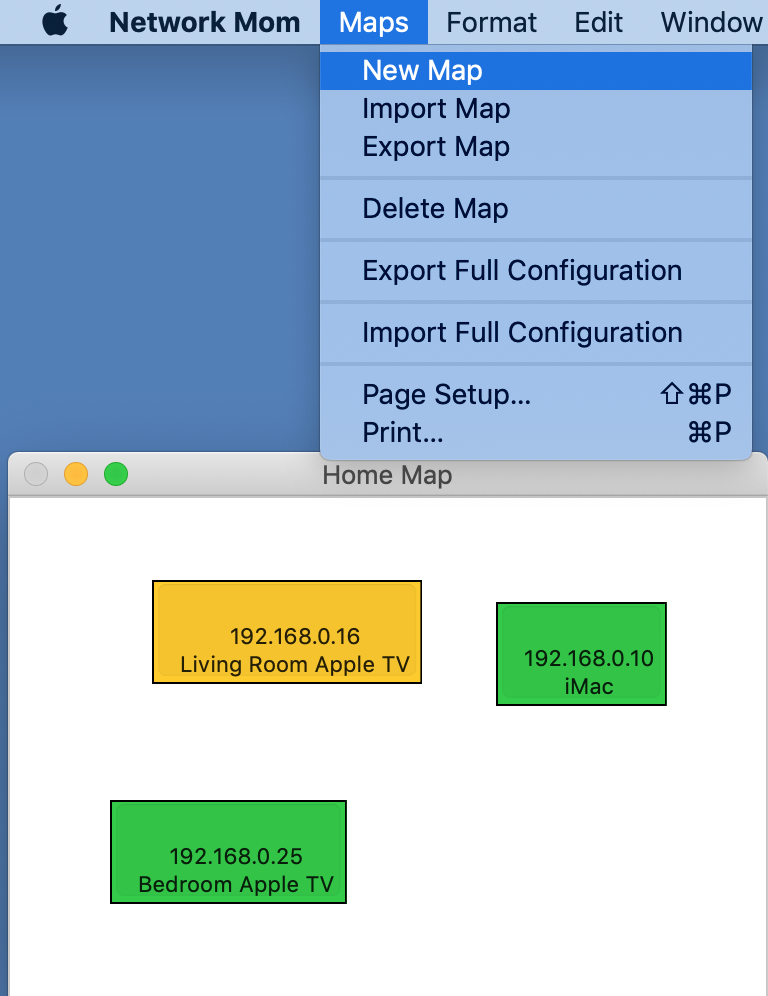
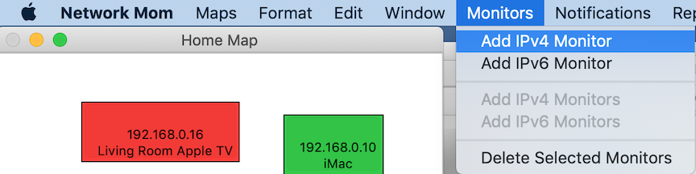
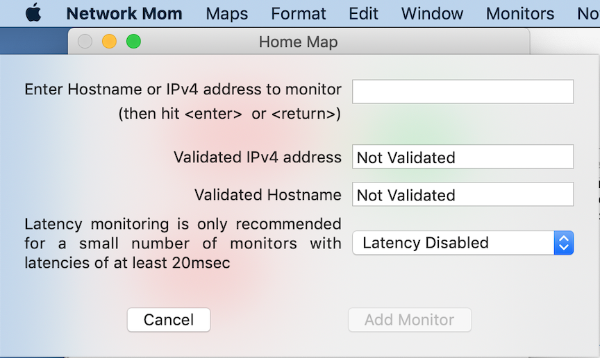
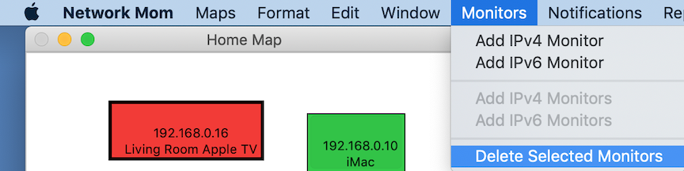

Network Mom Help
Overview
Network mom is a network and host monitoring application for IT professionals. It has the following features:
- Group devices to be monitored into maps.
- Associate each map with alert notification recipients and report notification recipients. In the current version all notifications use email delivery (most cell providers have email->SMS gateways).
- Ping hosts or network devices with an IPv4 ICMP ping.
- Ping hosts or network devices with an IPv6 ICMP ping.
- Measure and graph the "availability" of hosts (what percentage of pings they respond to).
- Measure and graph the latency of hosts (how many milliseconds did it take for Network Mom to receive the ping reply).
- Generate email alerts when devices change state between "responsive" versus "unresponsive".
- Generate daily, weekly, and monthly "availability reports".
- Generate weekly "device list reports".
- Automatically backup the configuration daily and before (gracefully) exiting.
- Manually backup the configuration when requested (recommended before upgrades).
Network Mom License
Network Mom is licensed for 30 days for free. We encourage you to try Network Mom out and make sure it meeds your needs before spending any money. Darrell Root LLC licenses Network Mom through Apple's MacOS App Store. As of January 2019, we plan the following approximate license prices in the US:
- Free for 30 days
- $10 for each additional 30 days (subscription)
- $100 for 1 year
- $200 for permanent unlock
Darrell Root LLC makes no guarantees that Network Mom will run on future versions of MacOS. But we feel an ethical obligation to update Network Mom for at least 2 years to support our permanent unlock customers.
Network Mom Task List
Here are the steps to build a fully operational Network Mom monitoring system.
- Install and configure your monitoring system Macintosh.
- Install Network Mom from the App Store.
- If needed, configure and test Network Mom's ability to automatically restart after a reboot.
- Maps -> New Maps to create your maps (one map is preconfigured by default)
- Monitors -> Add IPv4/6 Monitor to add targets to monitor
- Notifications -> Configure Email Server to configure your "from" email address and credentials.
- Notifications -> Configure Email Recipients to create potential alert and report recipients.
- Notifications -> Manage Email Notifications to activate alert and report emails.
- While Network Mom automatically saves its configuration at every graceful exit and every 24 hours, use Maps -> Export Full Configuration manually after major configuration changes to save an extra backup.
Recommended System Configuration
Because Network Mom measures availability and latency, for accurate measurements pick a monitoring system configuration which minimizes the loss or delay of network traffic. Delay or loss at your monitoring host can mask out issues with your network. We recommend the following system configuration to achieve the highest possible availability result:
- A dedicated Network Mom monitoring host will minimize packet loss or latency changes due to competing applications on the system.
- A desktop system (such as an iMac or a Mac Mini) is superior to a laptop for 24-hour network monitoring.
- Use a physical ethernet port, rather than WiFi, for the monitoring host. If you are using a laptop, this may require purchasing an ethernet dongle.
- If possible, plug the monitoring host in a highly available and central part of the network.
- Configure the monitoring host to never go to sleep in system preferences -> energy saver.
- Network Mom saves its "from" email password in the MacOS Keychain. We recommend using a non-personal account with a unique password for Network Mom "from" email. This may affect whether you want to enable iCloud Keychain Syncing. See "Configure Email Server" below for details.
Configuring monitoring to automatically restart after a power failure
Configuring monitoring to automatically restart after a power failure is difficult but possible on desktop systems. Because this will require "automatic login", this is only recommended if you use a dedicated monitoring host in a secure area. Avoid putting personal information (such as personal email) on such a system. We recommend creating a separate non-personal account for monitoring systems. This may warrant creating a non-personal iCloud account for purchasing the Network Mom license and originating Network Mom alert and report email.
Here are the steps to have Network Mom automatically restart after a power outage:
- Configure the monitoring host to restart automatically after a power failure in System Preferences -> Energy Saver. This is only possible for desktop systems.
- In System Preferences -> Users & Groups -> Login Options enable Automatic login. This may require only having 1 user account on the system.
- In System Preferences -> Users & Groups -> User -> Login Items add Network Mom to the list of applications to automatically start when the user logs in.
- We recommend testing that this works, but make sure to manually Maps -> Manual Save in Network Mom before abruptly shutting down the system.
Maps
Email alerts and reports are per map. The theory is that all the devices in a map are supported by a particular support team. If you have multiple teams, use a different map for each team. We recommend at least 2 maps per team: one for devices which require 24x7 paging, a second for less important devices where emailing the support team is sufficient.
Network Mom creates one map by default. You can rename this map in Maps -> Edit Map. You can create a new map with Maps -> New Map. You can delete a map with Maps -> Delete Map. Deleting a map deletes all data for all monitors in the map and cannot be undone.

Monitors
A monitor has several elements:
- Address
- This required element could be an IPv4 or IPv6 address
- Test type
- Required. Could be ICMPv4 or ICMPv6. In the future we expect to implement more application-level monitors.
- Hostname
- This optional element may be automatically added by Network Mom if Mom can determine the hostname from the IP address. Alternatively, you can enter a hostname when adding a monitor and Network Mom will automatically determine the IP address.
- Comment
- This optional descriptive text is included on the map and in alerts. It can help support personnel understand the type of device or impact of it being down.
- Latency Enabled/Disabled Flag
- Recording network latency doubles memory consumption for each monitor. Displaying latency also uses more space on the network map for each device. We recommend enabling network latency recording on a subset of devices. Latency measurements are most helpful for devices at sites remote from the monitoring station (to measure the latency of the WAN link).
Adding a monitor
- Select the map you want to add the monitor to.
- Select Monitors -> Add IPv4 Monitor or Monitors -> Add IPv6 Monitor
- Enter the hostname or IP address of the target, and hit return. Network Mom will validate the hostname/ip address and perform DNS resolution.
- Choose whether to enable latency.
- Click "add monitor"
- Optional Click and drag the monitor on the map to reposition it


Deleting a monitor
To delete a monitor, select (single click) the monitor in the map and choose Monitors -> Delete Selected Monitors. In general, menu options which delete data are at the bottom of the menus below a separator bar to prevent accidental use.
It is possible to shift-click to select multiple monitors for deletion.
